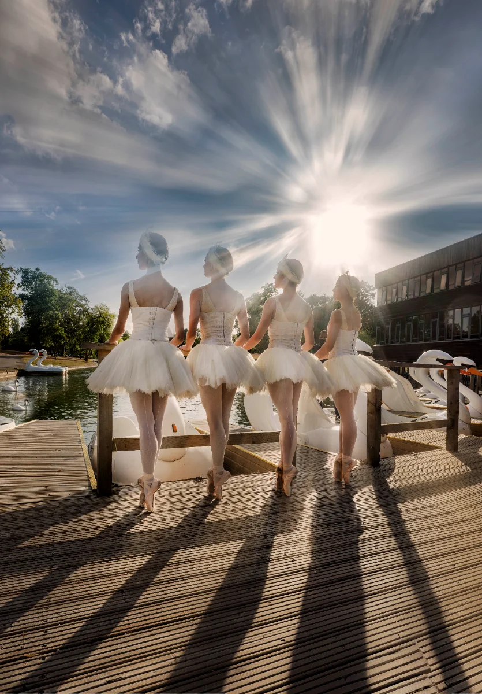

Dancers from Birmingham Royal Ballet made a splash at Cannon Hill Park’s boating lake this week, striking a pose alongside the iconic swan boats to celebrate the upcoming revival of Sir Peter Wright and Galina Samsova’s world-renowned production of Swan Lake.
The company’s first cast of four cygnets — Rachele Pizzillo, Reina Fuchigami, Rosanna Ely, and Sofia Liñares — took time out of intensive rehearsals to visit the historic Birmingham park, posing on the water before taking to the stage at Birmingham Hippodrome from Wednesday 23 September to Saturday 3 October 2026.
The cygnets in Swan Lake perform the iconic Danse des petits cygnes (Dance of the Little Swans) in Act II — one of the most recognisable and demanding pieces of classical choreography in ballet. The four dancers must cross arms in unbroken formation and move in precise, flawless unison, capturing young cygnets huddling together.
Set to Pyotr Ilyich Tchaikovsky’s legendary score performed live by the Royal Ballet Sinfonia, the ballet tells the timeless story of Prince Siegfried and Odette, a princess cursed by the sorcerer Baron von Rothbart to live as a swan by day and a woman by night.
Following its ten-day run at Birmingham Hippodrome, the production will transfer to London’s Sadler’s Wells Theatre from Wednesday 28 to Saturday 31 October 2026.
Families looking to get a closer look at the world of classical ballet can also catch Birmingham Royal Ballet in the city centre this weekend as part of Birmingham Weekender in the Bullring on Saturday 29 August, featuring free Swan Lake children's dance workshops.
Swan Lake Performance & Booking Details
- Birmingham Hippodrome: Wednesday 23 September – Saturday 3 October 2026
- Sadler’s Wells, London: Wednesday 28 October – Saturday 31 October 2026
- Music: Pyotr Ilyich Tchaikovsky, played live by the Royal Ballet Sinfonia
- Choreography & Production: Sir Peter Wright and Galina Samsova
- Family & Sensory Note: Features atmospheric stage lighting and dramatic live orchestral climaxes. Birmingham Hippodrome offers accessible seating and dedicated quiet spaces for families.
- Tickets & Information: Book online via brb.org.uk